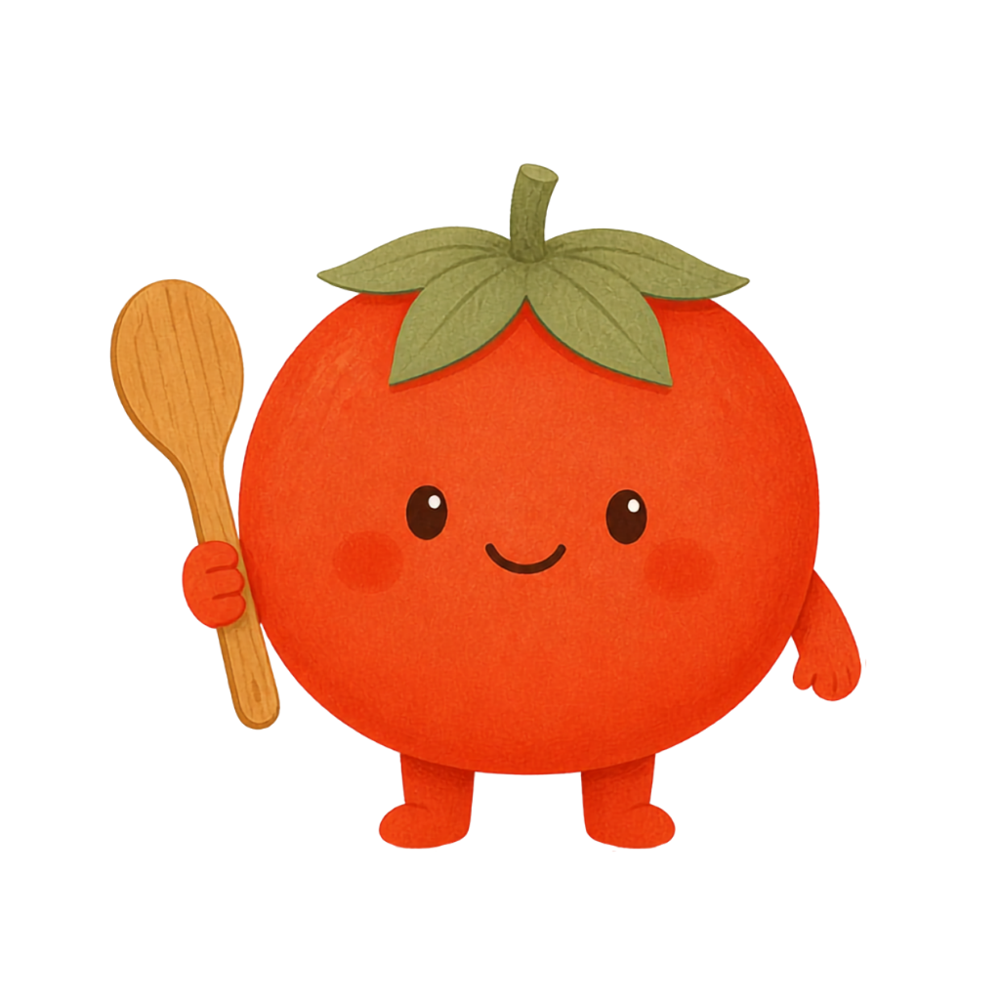

あの美味しそうなレシピ、
結局どこに保存したっけ?
3タップで、レシピが迷子にならない。
SNSで見つけた、動画で見た、ブログで読んだ ― 気になったレシピをその場で保存。もう、あとから探し回らなくていい。
あちこち探すストレスからさようなら
難しい登録もアカウント作成も不要。見つけたその場で保存できます。
レシピを見つけたら、共有ボタンから「まとめてレシピ」を選ぶだけ
サイトやアプリを問わず、ひとつの場所に集約されます
作りたくなったときに、探さずすぐに開けます
アプリやサイトをまたいでも、保存先はひとつだけ
データは端末内に保存され、外部には送信されません
アカウント登録の手間なく、インストールしてすぐ保存開始
まずはAndroid版から。iOS版は今後展開予定です
現在Android版を開発中です。公開時期は下記アカウントでお知らせします。
屋号「マトメルネ」(以下「当方」といいます)は、当方が提供するアプリケーション(以下「本アプリ」といいます)における、ユーザーの個人情報の取り扱いについて、以下のとおりプライバシーポリシー(以下「本ポリシー」といいます)を定めます。
本アプリは、現時点でユーザーの個人を特定できる情報を外部サーバーに送信・収集していません。ユーザーが本アプリ内で作成・保存するレシピ等のデータは、お使いの端末内にのみ保存されます。
本アプリは、現時点で第三者配信の広告および利用状況の分析ツールを使用していません。将来的にこれらを導入する場合は、本ポリシーを改定のうえ、本アプリ内でお知らせします。
当方は、法令に基づく場合を除き、ユーザーの情報を本人の同意なく第三者に提供することはありません。
本ポリシーの内容は、法令その他本ポリシーに別段の定めのある事項を除いて、ユーザーに通知することなく変更することができるものとします。変更後の本ポリシーは、本ページに掲載したときから効力を生じるものとします。
本ポリシーに関するお問い合わせは、下記の窓口までお願いいたします。
屋号:マトメルネ
連絡先:info@matomerune.com
制定日:2026年9月9日